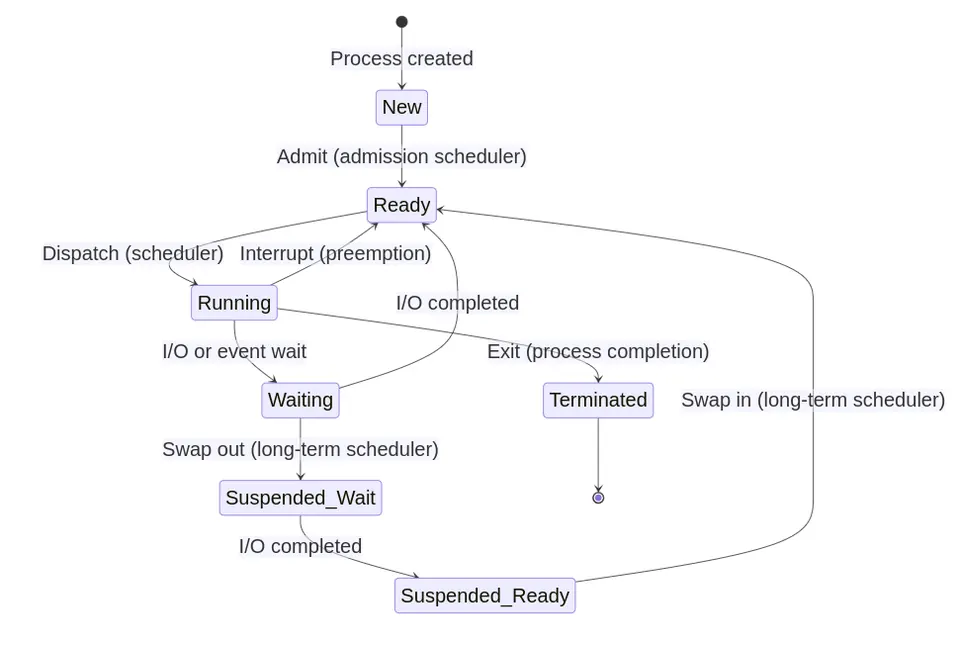

In any operating system, a process is the fundamental unit of execution—a live instance of a program. Beyond its executable code (the text segment), a process encompasses its dynamic state: the program counter, CPU registers, call stack, heap, and other variable storage. To manage and schedule these tasks, the OS assigns each process a unique process identifier (PID).
When a user executes a command, launches an application, or initiates a system service, a new process is instantiated. Modern computing systems, with their powerful processors, can handle a multitude of processes at the same time. This parallel execution is managed through a technique known as rapid context switching, where the operating system's scheduler assigns CPU time slices to each process and switches between them so quickly that it gives the illusion of simultaneous execution.
In the context of multicore CPUs, each core can handle its own set of processes independently. This multi-core processing enables even more efficient and faster handling of multiple processes.
Processes in a system can be broadly categorized into two types:
Process management is integral to system administration. The ps and top commands are pivotal for this purpose.
ps CommandThe ps command displays information about active processes. Here are some variants of the command:
I. Basic Process Listing
ps -efThis outputs a list of all currently running processes, showing the process ID (PID), terminal associated with the process (TTY), CPU time (TIME), and the executable name (CMD).
Sample Output:
UID PID PPID C STIME TTY TIME CMD
root 1 0 0 03:15 ? 00:00:01 /sbin/init
...II. Detailed Process Information
ps -e --format uid,pid,ppid,%cpu,cmdThis provides detailed information including User ID (UID), Process ID (PID), Parent Process ID (PPID), CPU usage (%CPU), and the command path (CMD).
Sample Output:
UID PID PPID %CPU CMD
1000 2176 2145 0.0 /usr/bin/bash
...III. Enhanced Process Summaries
One option:
ps auxThis gives a condensed summary of all active processes, including details like user, PID, CPU, and memory usage.
Sample Output:
USER PID %CPU %MEM VSZ RSS TTY STAT START TIME COMMAND
root 1 0.0 0.1 169560 5892 ? Ss Apr10 0:01 /sbin/init
...Another option:
ps faxThis displays the process hierarchy in a tree structure, showing parent-child relationships.
Sample Output:
PID TTY STAT TIME COMMAND
2 ? S 0:00 [kthreadd]
/-+- 3951 ? S 0:07 \_ [kworker/u8:2]
...ps -oCustomizes the output by specifying column names, tailored for specific requirements.
top CommandFor real-time process monitoring, top is used:
topThis shows a dynamic list of processes, usually sorted by CPU usage. It includes system summary information (like CPU and memory usage) and a detailed list of processes.
Sample Output:
top - 03:16:10 up 1 day, 6:37, 2 users, load average: 1.20, 0.45, 0.15
Tasks: 287 total, 1 running, 286 sleeping, 0 stopped, 0 zombie
%Cpu(s): 2.0 us, 0.5 sy, 0.0 ni, 97.4 id, 0.0 wa, 0.0 hi, 0.1 si, 0.0 st
KiB Mem : 16316412 total, 3943404 free, 8450008 used, 3923016 buff/cache
KiB Swap: 8388604 total, 8388604 free, 0 used. 11585756 avail Mem
PID USER PR NI VIRT RES SHR S %CPU %MEM TIME+ COMMAND
1297 root 20 0 457472 56080 36924 S 5.6 0.3 0:03.89 Xorg
...The life cycle of a process in an operating system is a critical concept. The provided diagram illustrates the various stages a process goes through:

Process spawning is a fundamental aspect of any operating system. It's the action of creating a new process from an existing one. Whether it's running a command from a terminal or a process creating another, spawning processes is a routine operation in system workflows.
systemd or init, based on the Linux distribution in use. Spawning a process can be as straightforward as executing a command or running a program from the command line. For instance:
echo "Hello, world!"This command creates a new process that executes the echo command, resulting in the specified text being printed on the terminal.
For more complex operations, you might need to spawn processes programmatically. In the C programming language, the fork and exec functions are frequently used for this purpose.
fork() creates a copy of the currently executing process, generating a new child process.exec() replaces the current process with a new one.Consider the following example:
#include <stdio.h>
#include <unistd.h>
int main() {
pid_t pid = fork();
if (pid == 0) {
// This is the child process
exec("/bin/ls");
} else {
// This is the parent process
printf("Child process ID: %d\n", pid);
}
return 0;
}In this program, a new process is created using the fork function, which then gets replaced by the ls command via the exec function. The parent process simply prints the child process ID on the terminal.
There are several other methods to spawn processes in Linux. Functions like system, popen, or posix_spawn from the POSIX library also provide process spawning capabilities.
To manage system resources effectively, it is sometimes necessary to terminate running processes. Depending on your needs, this can be accomplished in several ways.
Each process, upon its creation, is assigned a unique Process ID (PID). To stop a process using its PID, the kill command is used. For instance:
kill 12345In this example, a termination signal is sent to the process with PID 12345, instructing it to stop execution.
If you don't know a process's PID, but you do know its name, the pkill command is handy. This command allows you to stop a process using its name:
pkill process_nameIn this case, a termination signal is sent to all processes that share the specified name, effectively halting their execution.
The kill and pkill commands provide the option to specify the type of signal sent to a process. For example, to send a SIGINT signal (equivalent to Ctrl+C), you can use:
kill -SIGINT 12345Linux supports a variety of signals, each designed for a specific purpose. Some common signals include:
| Signal | Value | Description |
|---|---|---|
SIGHUP |
(1) | Hangup detected on controlling terminal or death of controlling process |
SIGINT |
(2) | Interrupt from keyboard; typically, caused by Ctrl+C |
SIGKILL |
(9) | Forces immediate process termination; it cannot be ignored, blocked, or caught |
SIGSTOP |
(19) | Pauses the process; cannot be ignored |
SIGCONT |
(18) | Resumes paused process |
Terminating processes should be performed with caution. Some processes may be critical for system operation or hold valuable data that could be lost upon abrupt termination. Therefore, it's advisable to use commands such as ps and top to observe currently running processes before attempting to stop any of them. This approach allows for more controlled and careful system management, preventing unintended disruptions or data loss.
killWhen using the kill command, special PID values can be used to target multiple processes:
-1 as a signal target sends the signal to all processes that the user has permission to signal, excluding the process itself and process ID 1 (the init process).0 target sends the signal to all processes in the same process group as the calling process, allowing for group-wide signaling.kill -2 -SIGTERM sends the SIGTERM signal to all processes in the process group with PGID 2.These special values allow for more flexible management of processes and process groups, especially in scenarios where you need to signal multiple related processes at once. Here are examples of using these special values:
# Sending SIGTERM to all processes the user can signal
kill -1 -SIGTERM
# Sending SIGTERM to all processes in the same process group as the current process
kill 0 -SIGTERM
# Sending SIGTERM to all processes in the process group with PGID 2
kill -2 -SIGTERMWhether you need a quick “What’s that PID?” or a detailed, real-time view, Linux gives you several handy tools
ps + grep — the classic one-linerCommand
ps -ef | grep firefoxTypical output
user 2345 1023 1 11:02 ? 00:00:03 /usr/lib/firefox/firefox
user 2389 2345 0 11:02 ? 00:00:00 /usr/lib/firefox/firefox -contentproc -childID 1
user 2411 2345 0 11:02 ? 00:00:00 /usr/lib/firefox/firefox -contentproc -childID 2| Column | What it means (why you care) |
|---|---|
| user | Who owns the process. Useful when diagnosing multi-user boxes. |
| PID | The Process ID you’ll feed to kill, strace, etc. |
| PPID | Parent PID. Child PIDs tell you which tab/plugin crashed. |
| %CPU / %MEM | If you add the -o %cpu,%mem flags, you’ll see quick resource usage. |
| CMD | Full command line—helps confirm you’re looking at the right thing. |
Tip: End the pipeline with
grep -v grepor useps -ef | grep [f]irefoxso thegrepprocess doesn’t show up in the results.
pgrep — faster, script-friendlyCommand:
pgrep -l nginx-l prints the name along with each PID.
Typical output:
1298 nginx
1300 nginxfor pid in $(pgrep nginx); do sudo strace -p "$pid"; doneWhy use
pgrep? • No need forps+grepgymnastics. • Supports extra filters (-u user,-fto match the full command line,-nfor the newest PID).
htop — interactive, real-time dashboardhtop ↵ to open the UI./) and start typing a name—e.g., python. PID USER PRI NI VIRT RES SHR S CPU% MEM% TIME+ Command
4382 user 20 0 765M 145M 28M S 3.6 1.9 0:10.23 python my_script.pyInterpretation cheat-sheet • Green = user-space CPU, Red = kernel, Blue = low-priority, Orange = IRQ. • High “Load average” in the header plus many processes in state R (running) → possible CPU bottleneck.
When you kick off a command in a shell, it either grabs the terminal (foreground) or quietly keeps working behind the scenes (background). Knowing how to juggle the two is essential for multitasking without spawning extra terminals.
+------------------------+
| |
| Start Job in Foreground|
| |
+-----------+------------+
|
| Ctrl+Z or bg
v
+-----------+------------+
| |
| Job Running in |
| Background |
| |
+-----------+------------+
|
| fg or job completes
v
+-----------+------------+
| |
| Job Completes |
| or Returns to |
| Foreground |
| |
+------------------------+| What you type | What happens |
|---|---|
sleep 1000 |
Sleeps 1 000 s in the foreground — your prompt is blocked. |
sleep 1000 & |
Same command, but it immediately returns control, printing the job and PID. |
Typical background launch:
$ sleep 1000 &
[1] 3241[1] Job number (used by fg/bg).3241 Process ID (PID) you’d feed to kill, strace, etc.I. Ctrl + Z — sends SIGTSTP, pausing the job and parking it:
^Z # you pressed Ctrl+Z
[1]+ Stopped long_running_script.shII. bg %1 — resumes that job in the background.
III. fg %1 — yanks it back to the foreground whenever you’re ready.
Shortcut: If there’s only one stopped job, plain
bgorfgis enough;%1is implied.
$ jobs -l # -l also shows the PID
[1] + 3241 Running sleep 1000 &
[2] - 3250 Stopped vi notes.txtColumn guide
+ / - Current (+) and previous (–) jobs, used by fg/bg defaults.Running, Stopped, or Done.| Need to… | Hit / Type |
|---|---|
| Pause current task & free prompt | Ctrl + Z |
| Let it keep running silently | bg |
| Check what’s in the background | jobs |
| Bring last job back up front | fg |
| Nudge a specific one | fg %3, bg %2 |
| Kill misbehaving job | kill %1 or kill 3241 |
vim, nano) freeze; a quick fg gets you back.cmd &>log &) to avoid cluttering your prompt.systemd, tmux, screen) instead of backgrounding from a login shell, which dies when your session closes.top or htop command, identify the process consuming the most CPU resources and terminate it. In htop, experiment with filtering processes by a specific string and sorting them by memory usage.ps output even after sending it a SIGKILL?